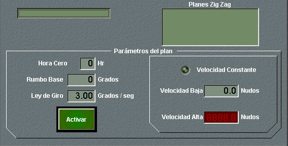

Zig Zag

En el panel de detalle de planes Zig Zag se muestra la lista de planes disponibles en la unidad, y para el plan que se esté ejecutando, se muestran sus datos. Además se pueden ejecutar las siguientes acciones:
- Seleccionar un Plan Zig-Zag de la lista de planes disponibles para la unidad, que son todos los definidos para el Ejercicio que tengan mismo bando que la unidad propia.
- Seleccionar la hora cero para el plan, introduciendo su valor en horas en el campo Hora Cero. Por defecto se rellena con la hora actual.
- Seleccionar el rumbo base del plan, introduciendo su valor en grados en el campo Rumbo Base. Por defecto se rellena con el rumbo actual de la unidad.
- Seleccionar la ley de giro del plan, introduciendo su valor en grados por segundo en el campo Ley de Giro. Por defecto se rellena con la máxima velocidad de giro de la unidad.
- Seleccionar la velocidad baja para el plan, introduciendo su valor en nudos (entre 0 y 999) en el campo Velocidad Baja. Si el plan es a Velocidad Constante se muestra el led correspondiente verde encendido. Si el plan NO es a Velocidad Constante se calcula y muestra automáticamente la Velocidad Alta a partir del Factor Velocidad del plan y la Velocidad Baja introducida.
- Activar el Plan Zig-Zag, con lo que según la hora actual respecto a la hora cero introducida, se inicia el plan (ver Modelística – Planes – Zig-Zag) en el tramo que corresponda. Durante la ejecución del plan, pulsando de nuevo el botón Activar (cuya leyenda se sustituye por Cancelar) se produce la cancelación del plan, quedando la unidad con el rumbo y velocidad que lleva en ese instante. Esta maniobra no podrá ser activada (se mostrará un mensaje de error al pulsar este botón) si la unidad tiene destruida la maquinaria o el timón, si carece de combustible (o batería en el caso de submarinos), si está en Base, o si la velocidad (constante o alta) del plan es superior a la máxima de la unidad.